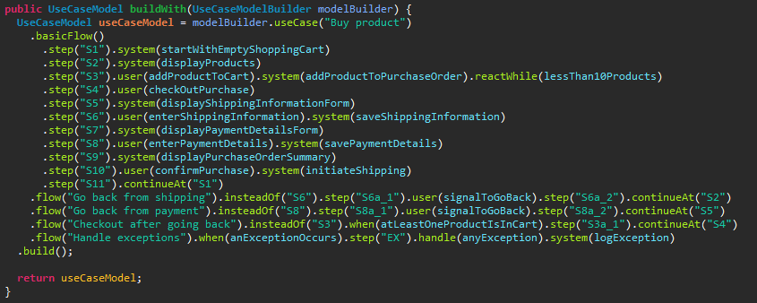
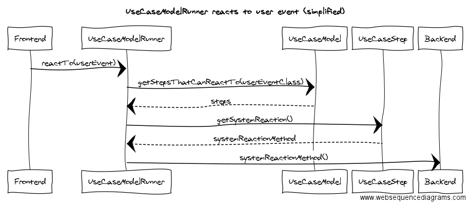

[번역] 진실은 코드에 있다
May 7, 2017 00:00 · 5535 words · 12 minute read
Bertil Muth의 The truth is in the code을 번역한 글입니다.

머잖아, 모든 소프트웨어 개발자는 다음과 같은 말을 들을것이다:
진실은 오직 한 곳, 코드에서만 발견된다.
- Robert C.Martin, Clean Code
그런데 이게 무슨 뜻인가?
애자일 선언서에서는 “포괄적인 문서보다 작동하는 소프트웨어”를 가치있게 여긴다.
개발자는 매순간 소프트웨어의 동작에 대한 포괄적인 문서를 작성한다. 바로 코드이다.
코드 주석 및 외부 명세는 소프트웨어의 동작을 문서화한다. 그러나 이들은 코드가 변경될 때 갱신되지 않을 수도 있다. 그런 다음 이들은 곧 소프트웨어의 동작을 반영하지 않을 것이다.
이와 반대로, 코드는 소프트웨어의 동작을 항상 반영한다. 코드는 이를 정의한다.
이게 바로 진실이 코드에 있는 이유이다.
독자를 위한 코드 작성
코드는 문서다. 모든 문서는 문서를 읽는 독자가 이해할 수 있어야한다.
코드를 읽는 주체는 컴파일러 또는 인터프리터 그리고 다른 개발자들이다.
따라서 여러분의 코드가 컴파일이 된다는 것 만으로는 충분하지 않다. 다른 개발자 또한 코드를 이해할 수 있어야한다. 그들은 나중에 여러분의 코드를 변경하고 확장하는 일을 해야할 수도 있다.
코드를 이해하기 쉽게 만드는 일반적인 제안은 클린 코드를 작성하는 것이다. 변수 및 메소드 이름에 이해할 수있는 말을 사용하는 코두. 이는 많은 코드에 주석이 필요없도록 만들기도 한다.
클린 코드는 “메서드가 어떻게 동작하는가”가 아닌 “메서드를 실행해서 *무엇*을 할 수 있는가”라는 의도를 표현해야한다.
아래 메서드가 무슨 일을 하는지 추측해보라:
BigDecimal addUp(List<BigDecimal> ns){..}
다음과 같이 쓰는게 어떤가:
BigDecimal calculateTotal(List<BigDecimal> individualPrice){..}
클린 코드를 작성하는것은 좋은 생각이다. 그러나 나는 이것만으로는 충분하지 않다고 생각한다.
이해 공유의 중요성
새로운 요구사항이 생겼을 때, 여러분이 구현하는것이 기존 코드에 어떻게 영향을 미치는지 이해할 필요가 있다. 여러분의 소프트웨어가 오랫동안 사용되어 왔다면 이는 문제가 될 수 있다. 나는 다음과 같은 대화를 매우 자주 듣는다:
X: foo 기능을 추가할 수 없습니다.
Y: 왜죠?
X: 코드에 대해 아는 사람이 Z 밖에 없습니다. 우리가 지금 변경해야할 코드들이 그가 작성한 코드입니다.
Y: 흠, 그분에게 물어보는건 어떨까요?
X: 그분이 지금 아파서 / 휴가라서 / 컨퍼런스에 가서 / 지금은 퇴사를해서 그럴 수가 없습니다.
Y: 아…
문제는 여기에 있다. 여러분의 코드가 이해하기 쉬운지를 알기 위해선, 다른 사람이 이를 이해하기 위해 시도해야한다.
이를 위한 기술이 있다. 페어 프로그래밍이 좋다. 또는 다른 개발자들과 함께 앉는 것도 좋다. 여러분은 그들에게 직접 작성한 코드를 보여줄 수 있다.
그럼에도 불구하고, 많은 개발자들이 하나의 프로젝트에 관여한다면 어떨까? 개발팀의 팀원들이 바뀌면 어떨까? 이는 다른 사람들이 충분히 이해할 수 있는 코드를 작성하길 어렵게 만든다.
이야기
클린 코드는 여러분에게 올바른 단어 를 제공한다.
문제는 여러분의 코드에서 클린 코드와 함께 어떤 이야기를 들려줄 것인가이다.
나는 모른다.
하지만 일반적인 비즈니스 애플리케이션의 경우, 나는 코드 속에서 읽고자 하는 이야기가 무엇인지 확실히 알고 있다.
간단한 예시를 소개한 후, 이야기를 개략적으로 설명해보겠다.
장갑 가게 예시
소프트웨어 사용자로서 나는 내가 원하는 결과를 얻고싶다. 예를 들어, 겨울철에 손가락을 따뜻하게 유지하기 위한 새로운 장갑을 착용하고 싶다고 하자.
따라서 나는 온라인에 들어가 장갑에 특화된 새로운 온라인 상점에 접속한다. 상점 웹사이트에서 장갑을 살 수 있다. 유즈케이스 (use case)의 “basic flow” (“happy day scenario”라고도 부른다)는 다음과 같을 것이다:
- 시스템은 빈 장바구니로 시작한다.
- 시스템은 장갑 목록을 보여준다.
- 마음에 드는 장갑을 장바구니에 넣는다. 시스템은 그 장갑을 나의 주문내역에 추가한다.
- 결제를 한다.
- 배송 정보와 결제 상세 정보를 입력한다. 시스템은 이 정보들을 저장한다.
- 확인을 하면, 시스템은 배송을 시작한다.
며칠 후, 장갑을 수령한다.
다음은 코드 속에서 읽고 싶은 이야기들이다
챕터 1: 유즈 케이스
이 이야기의 첫 번째 챕터는 유즈 케이스에 관한 것이다. 코드를 읽을 때 코드의 유즈 케이스를 원하는 결과까지 단계별로 따라 가고자 한다.
나는 무언가 잘못 되었을 때 시스템이 어떻게 반응해야 하는지를 알고싶다. 사용자의 입장에서 말이다.
나는 또한 발생 가능한 경우들에 대해서도 알고싶다. 예를 들어, 사용자가 결제 상세 내역에서 배송 정보로 돌아가려고 할 때 무슨일이 벌어지는가? 이 또한 가능한가?
나는 유즈 케이스의 각 부분에 대해 코드를 어떻게 작성해야하는지 알고싶다.
그렇다면 유즈 케이스의 구성 요소는 무엇인가?
유즈 케이스의 핵심 요소는 사용자를 원하는 결과에 더 가깝게 만드는 *스텝 (step)*이다. 예를 들어 다음과 같다: “시스템은 장갑 목록을 보여준다.”
모든 사용자가 스텝을 수행할 수 있는건 아니며 특정 사용자 그룹 (”액터 (actor)”)의 멤버들만 가능한 경우가 있다. 고객은 장갑을 구매하고, 마케터들은 새로운 장갑을 시스템에 입력할 수 있다.
시스템은 자체적으로 일부 스텝들을 수행한다. 장갑 목록을 보여주는 것과 같이 사용자 인터랙션이 필요없는 경우가 있다.
또는 어떤 스텝은 사용자와의 인터랙션이다. 시스템은 특정 *사용자 이벤트*에 대해 *반응*한다. 예를 들어 다음과 같다: 사용자가 배송 정보를 입력하면 시스템은 그 정보를 저장한다.
나는 사용자 이벤트에 대해 어떤 *데이터*를 기대하는지 알고싶다. 배송 정보는 사용자명, 주소등을 포함한다.
사용자는 어떤 특정 시점에서 스텝의 하위 스텝들만 수행할 수 있다. 사용자는 배송 정보를 입력한 뒤에만 결제 상세 정보를 입력할 수 있다. 따라서 유즈 케이스에는 스텝들의 순서를 정의하는 *플로우 (flow)*가 있다. 그리고 시스템의 상태에 따라 시스템이 반응할 수 있는지에 대한 여부를 정의하는 *조건 (condition)*이 있다.
코드를 이해하려면 이와 같은 것들을 쉽게 알 수 있어야한다
유즈 케이스 (“장갑 구매”와 같은):
- 스텝 들의 플로우
각 스텝에 대해:
- *액터 (actors)*의 스텝에 대한 접근 (즉, 사용자 그룹을 말함)
- 시스템이 반응하는 조건
- 스텝은 자동적으로 수행되거나 사용자 인터랙션 에 기반
- 시스템 반응
각 사용자 인터랙션 스텝에 대해:
- 사용자 이벤트 (“사용자가 배송 정보를 입력했다”와 같은)
- 이벤트가 발생해서 나오는 데이터
코드에서 유즈 케이스와 그 요소들을 어디에서 찾을 수 있는지 알게 되면 좀 더 깊게 들여다 볼 수 있다.
챕터 2: 컴포넌트를 스텝별로 분해
여러분의 소프트웨어에서 캡슐화 되어있고, 교체가능한 빌딩 블록들을 *컴포넌트 (component)*라고 하자. 컴포넌트의 *임무 (responsibility)*는 컴포넌트 외부에서 사용할 수 있다.
컴포넌트는 다음중 하나가 될 수 있다:
- 데이터베이스 저장소와 같은 기술적 컴포넌트
- “장바구니 서비스”와 같은 서비스
- 도메인 모델에서의 엔티티
이들은 여러분의 소프트웨어 설계에따라 달라진다. 그러나 컴포넌트가 무엇인지는 중요하지 않다: 여러분은 보통 유즈 케이스의 한 스텝을 실현하기 위해 여러개의 컴포넌트가 필요하다.
“시스템은 장갑 목록을 보여준다”라는 스텝에서의 *시스템 반응*을 살펴보자. 여러분은 아마 최소 두 개의 임무 를 개발해야 할 것이다. 하나는 데이터베이스에서 장갑들을 찾는 것이고, 또 하나는 장갑의 목록을 웹페이지에 전달하는 것이다.
코드를 읽을 때 나는 다음의 것들을 이해하고자 한다:
- 컴포넌트의 임무 는 무엇인가. 예를 들면 다음과 같다: 데이터베이스 저장소에서 “장갑 찾기”.
- 각 임무에 대한 *입력값 (inputs) / 출력값 (outputs)*은 무엇인가. 입력값 예시: 찾아야할 장갑에 대한 기준. 출력값 예시: 장갑 목록.
- 누가 임무를 조정 (coordinates) 하는가. 예를 들면 다음과 같다: 먼저 장갑을 찾는다. 그 다음 그 결과를 웹페이지로 전달한다.
챕터 3: 컴포넌트가 하는 일
컴포넌트의 코드는 임무를 수행한다.
이는 *도메인 모델 (domain model)*에서 종종 발생한다. 도메인 모델은 비즈니스 도메인과 관련된 용어를 사용한다.
예를 들어, 용어는 장갑 (Glove)이 될 수 있고. 또 다른 용어는 주문 (Order)이 될 수 있다.
도메인 모델은 각 용어에 대한 데이터 를 묘사한다. 각 장갑은 색, 브랜드, 사이즈, 가격등의 데이터를 갖는다.
도메인 모델은 또한 데이터에서 이루어지는 연산들을 묘사한다. 주문의 총 가격은 유저가 구매한 각 장갑들의 가격의 합이다.
컴포넌트는 또한 데이터베이스 저장소와 같은 기술적 컴포넌트가 될 수 있다. 코드는 답을 해야한다: 저장소가 데이터베이스의 요소들을 어떻게 생성하고, 찾고, 업데이트하고 삭제하는지에 대해서.
여러분의 이야기를 말하라
아마 여러분의 이야기는 위와 유사할 것이다. 다를 수도 있다. 여러분의 이야기가 무엇이든, 프로그래밍 언어는 여러분 자신을 표현하고 그 이야기를 말할 수있는 큰 자유를 준다.
이는 개발자들이 다른 컨텍스트와 요구 사항에 적응할 수 있도록 해주므로 좋은 일이다.
이는 또한 개발자들이 서로 너무 다른 이야기들을 들려줄 수 있다는 위험이 있다. 같은 제품임에도 불구하고 말이다. 따라서 누군가가 다른 사람이 작성한 코드를 이해하는 것이 필요 이상으로 어려워진다.
이 문제를 해결하는 한 가지 방법은 디자인 패턴을 사용하는 것이다. 이는 코드를 좀 더 구조화 시켜준다. 여러분은 여러분의 팀 또는 팀 전반에서 공통된 구조를 사용하는 것에 대해 동의 할 수 있을 것이다.
예를 들어, 레일즈 (Rails) 프레임워크는 잘 알려진 MVC (Model-View-Controller) 패턴에 기반하고 있다.
모델은 도메인 모델 이 존재하는 부분이다.
뷰는 HTML 페이지와 같은 클라이언트단의 사용자 인터페이스이다. 이는 사용자 이벤트 가 발생하는 지점이다.
컨트롤러는 서버단에서 사용자 이벤트를 받는다. 이는 플로우 를 책임진다.
따라서 여러 개발자들이 레일즈를 사용한다면, 그들은 코드의 어느 부분에서 그들의 이야기의 특정 부분을 볼 수 있는지 알고있다.
그들은 서로간의 이해를 공유 할 때 무엇인 빠졌는지를 발견 할 수 있다. 그런 다음, 그들은 그들의 이야기의 어느 부분을 어디에 둘 것인지에 대한 더 많은 협약에 대해 동의를 할 수 있다.
이러한 방식을 사용함에 있어 효과가 있다면 다행이다. 하지만 나는 이 이상으로 좀 더 나아가고싶다.
코드로서의 요구사항
많은 고객들이 나에게 장기간의 소프트웨어 문서를 다루는 방법을 묻곤한다.
애자일 방법론으로 작업을 할 때, 여러분은 소프트웨어 유지보수를 위한 문서를 어떻게 작성하는가?
지금까지 어떤 요구사항들이 구현되었는가?
요구사항이 실현된 부분은 코드의 어느 부분에서 찾을 수 있는가?
긴 시간동안 나는 만족스러운 대답을 하지 못했다. 물론, 잘 쓰여진 자동화 테스트의 중요성, 깨끗한 프로덕션 코드, 이해의 공유를 제외하고는.
그러나 몇 년 전, 나는 다음과 같은 생각을 하기 시작했다:
만약 진실이 코드에 있다면, 코드는 진실을 말 할 수 있어야한다.
달리 말하면: 여러분이 코드에서 여러분의 이야기를 잘 말하고 있다면, 왜 다시 말하고 싶은가?
더 나은 방법이 필요하다. 이야기를 추출하고 이를 사용해 문서를 만들어낼 수 있어야한다. 기술자가 아닌 이해 관계자들 또한 문서를 이해할 수 있어야한다.
문서는 항상 최신 상태여야하는데, 이는 소프트웨어의 동작을 정의하는 동일한 출처로부터 제공되기 때문이다.
유일하게 신뢰할 수 있는 출처는 바로 코드 그 자체이다.
수 많은 실험 끝에, 몇 가지 결과를 얻었다. 나는 이를 requirementsascode라고 하는 Github 프로젝트로 공개했다.
동작 방식

- UseCaseModel 인스턴스는 액터, 유즈 케이스, 플로우 그리고 스텝 을 정의한다. 이는 이야기의 챕터 1을 말한다. 이 글의 처음 시작 부분에서 있는 모델과 같은 예시를 들 수 있다.
- 유즈 케이스 모델은 UseCaseModelRunner 인스턴스를 설정한다. 모든 사용자는 자체 러너 (runner)를 가지고 있는데, 모든 사용자가 모델의 유즈 케이스를 통해 다른 경로를 갖게 될 것이기 때문이다.
- 러너 (runner)는 백엔드의 시스템 반응 을 호출함으로써 프론트엔드에서의 사용자 이벤트 에 반응한다. 프론트엔드는 오직 러너를 통해서만 백엔드와 통신한다.
- 그러나 러너는 사용자가 플로우 의 올바른 위치에 있고 스텝의 조건 이 충족된 경우에만 반응한다. 예를 들어, 러너는 사용자가 바로 직전에 배송 정보를 입력한 경우에만 “EnterPaymentDetails” 이벤트에 반응한다.
- 시스템 반응 은 단일 메서드이다. 메서드의 바디는 챕터 2에서 설명한대로 스텝을 실현하기 위해 컴포넌트를 조정하는데에 책임을 갖는다,
- 챕터 3은 requirementsascode의 바깥 범주이다. 이는 애플리케이션에 남아있다. 이는 requirementsascode를 임의의 소프트웨어 설계와 호환 가능하게한다.
따라서 UseCaseModelRunner는 소프트웨어의 사용자의 가시적인 행동을 제어한다. UseCaseModel에 기반해서 말이다.
requirementsascodeextract를 사용해, 러너를 설정하는 동일한 유즈 케이스 모델로부터 문서를 생성할 수 있다. 이런 식으로 문서는 항상 소프트웨어의 동작 방식을 반영한다.
Requirementsascodeextract는 FreeMarker 템플릿 엔진을 사용한다. 이는 여러분이 원하는 모든 일반 텍스트 문서를 생성할 수 있도록 해준다. 예를 들면 HTML 페이지가 있다. 추가 처리로 PDF와 같은 다른 문서 형식으로도 변환 할 수 있다.
여러분의 피드백이 이 프로젝트를 개선하는데 도움이 될 것이다
나는 requirementsascode 프로젝트를 몇 년 전에 시작했지만, 최근에서야 공개 하게됐다. 이는 처음으로부터 상당히 개선되었다.
나는 이 접근 방식이 확장 가능한지에 대한 여부를 알아보기 위해 수천 줄의 코드를 가진 애플리케이션에서 이를 시도해봤다. 그것은 효과가 있었다. 나는 작은 애플리케이션에서도 이를 시도했다.
아직도, 지금까지 requirementsascode는 나의 취미 프로젝트였다.
그렇기 때문에 나는 여러분의 도움이 필요하다. 나에게 피드백을 달라.
이 아이디어에 대해서 어떻게 생각하는가? 여러분이 개발하고 있는 소프트웨어에서 이게 동작할 것 같나요? 다른 피드백이 있는가?
댓글에 메모를 남기거나 Twitter 또는 LinkedIn에서 연락을 달라.
여러분은 프로젝트를 클론 할 수 있고 여러분 스스로 시도해 볼 수 있다.
또는 코드에서 진실을 문서화 하는데 기여 할 수 있다.